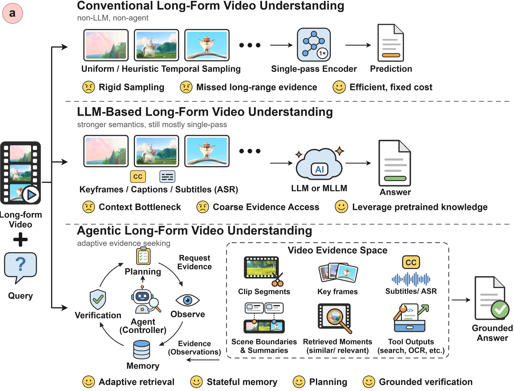

A.I.R
A living research survey
Beyond Passive
Watching.
A Comprehensive Survey of Agentic Systems
for Long-Form Video Understanding
Long videos. Limited context. Smarter actions.
Mapping the shift from processing frames to actively seeking evidence.
Manuscript in preparation / Open research collection
106curated papers
04connected stages
16research mechanisms
2023–2026bibliographic years
The agentic shift Evidence drives the next action
Don’t just watch.
Decide what to see next.
A later evidence-seeking action depends on an earlier observation. That feedback is what closes the loop.
Where should the agent look next? Retrieve relevant moments, zoom into a segment, or invoke a perception tool to collect useful observations.
Explore acquisition ↗ Need more evidence? Update the state and continue the loop.
01 / The perspective
Understanding video
is becoming an
active process.
Long videos make exhaustive, high-resolution processing expensive. The important question becomes: which evidence is worth observing next?
Video agents use tools, maintain memory, and adapt their reasoning as new evidence arrives. This survey organizes those systems around four connected functions: evidence acquisition, memory and state, control and planning, and verification.
Our working definition of agencyA later video-evidence action depends on an observation made earlier in the same inference trajectory.

02 / The research map
Four stages.
A connected field.
Explore the mechanisms behind the agent loop. Categories overlap: one paper can contribute to several stages.
Stage 01 / Acquisition
Where should the agent look next?
Seek relevant evidence instead of processing every frame. Acquisition methods decide which moments, modalities, and levels of detail to observe.
Stage 02 / Memory
What should the agent remember?
Make earlier observations useful for later decisions. Memory methods organize, compress, retrieve, and update evidence across long temporal horizons.
Stage 03 / Planning
Which action should the agent take?
Turn observations into an actionable next step. Controllers select tools, coordinate agents, and choose how to allocate the reasoning process.
Stage 04 / Verification
Is the evidence sufficient to answer?
Assess whether an answer is supported. Verification methods compare hypotheses, revisit evidence, express uncertainty, and reconcile competing claims.
† Includes 18 agent-enabling methods and conceptual precursors, distinguished throughout the paper explorer.
View the full taxonomy figure ↗03 / The landscape
A field
taking shape.
From early tool-using systems to agents that search, remember, and reason over long videos.
Explore the collection ↗Papers by bibliographic year106 unique papers
Years and venues follow the survey bibliography. This is a curated collection, not a measure of the entire field.
04 / The paper explorer
Your next
research rabbit hole.
106 papers, organized for discovery.
Search a method, follow a mechanism, or find a new reading path.
START WITH A QUESTIONHow do agents find evidence? ↗How do they remember? ↗Can they check their answers? ↗
/
A4VL
AffectSeek
AOP-Agent
AVA
AVP
CADER
COACH
Conan
CRAFT
DVD
EGAgent
Ego-R1
EVA
EventMemAgent
FALCONEye
GOPAgen
HAVEN
HiCrew
Homer
HPP
IMPACT-CYCLE
LensWalk
Light-Omni
LongShOTAgent
LongVideo-R1
LongVideoAgent
LongVT
M3-Agent
MAGIC-Video
MemDreamer
MemoryCard†
Agent-enabling methodMERIT
MM-MEM
OmniAgent
OmniGAIA
OmniRAG-Agent
ProVCA
PyraVid
ReAgent-V
Reflect-R1
SAGE
SiLVR†
Agent-enabling methodStreamBridge†
Agent-enabling methodStreamingVLM†
Agent-enabling methodStreamMeCo†
Agent-enabling methodSVAgent
Symphony
TASKER†
Agent-enabling methodTaYS
TCogMap†
Agent-enabling methodThinkStream†
Agent-enabling methodTimeProVe
TimeSearch-R
TRACE
VAM
VESTA
Video-BrowseComp
Video-MTR
VideoARM
VideoBrain
VideoChat-A1
VideoChat-M1
VideoHV-Agent
VideoLucy
VideoRAG†
Agent-enabling methodVideoSEAL
VideoSeek
VideoTemp-o3
VideoThinker
VideoZoomer
VITAL
VSeek
WorldMM
ZoomV
AVI
CogniGPT
Dispider†
Agent-enabling methodDrVideo
Embodied VideoAgent
GCAgent
GraphVideoAgent
LangRepo†
Agent-enabling methodLVAgent
MASR
Mr. Video†
Agent-enabling methodStreamAgent
T*
VCA
Video-EM
VideoAgent2
VideoExplorer
VideoMultiAgents
VideoTree
AVUA
DoraemonGPT
MA-LMM†
Agent-enabling methodMoReVQA†
Agent-enabling methodMovieChat†
Agent-enabling methodOmAgent
TraveLER
VideoAgent
VideoINSTA
LifelongMemory†
Agent-enabling methodReflexion†
Agent-enabling methodViperGPT†
Agent-enabling methodNo papers match these filters.
Try a broader search or a different mechanism.
Metadata follows the supplied bibliography; venues have not been independently audited. “Find paper” opens a title search when no direct publication identifier is available. Code links are a verified subset. Data & provenance ↗
05 / Keep exploring
A shared map.
An open invitation.
The survey is in preparation, and the collection continues to evolve. Help make it more useful for the community.
Suggest a paper ↗Referencing this work
The manuscript is on its way.
A formal survey citation will be added when the manuscript is public. In the meantime, cite individual papers using the explorer, or share the research repository.